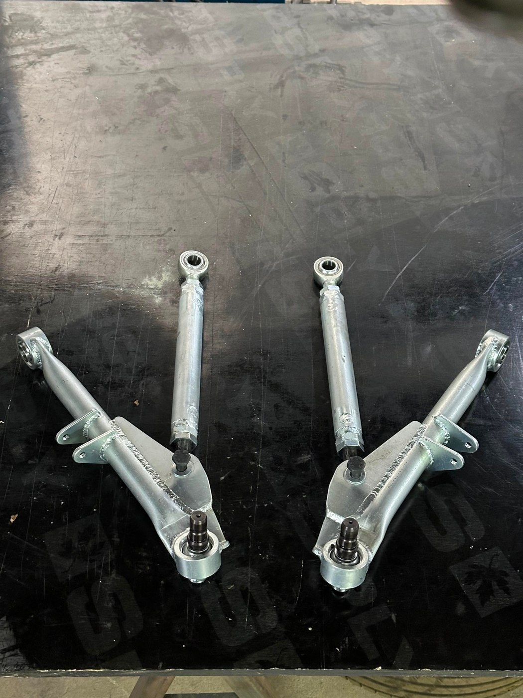

← All projects

Suspension Control Arm of a Rally Car
2E Design | Mechanical design
Stronger, more durable control arm

What?
- R&D to improve the suspension control arm of a rallycross car for performance and durability under racing conditions.
How?
- Redesigned the arm after the original broke during a race.
- Manufactured a stiffer, more robust arm and fitted it to the car.
Results
- A stronger, more durable arm that improved performance and reliability on the track.